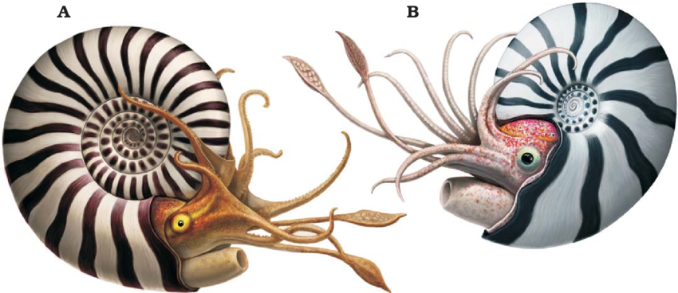
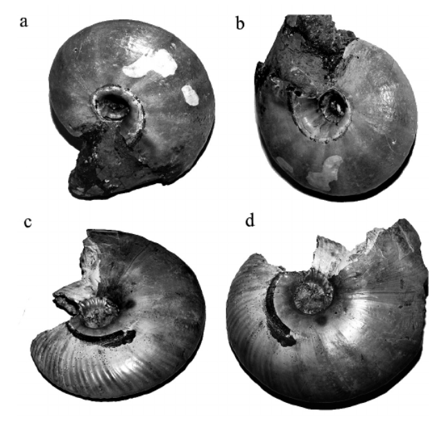
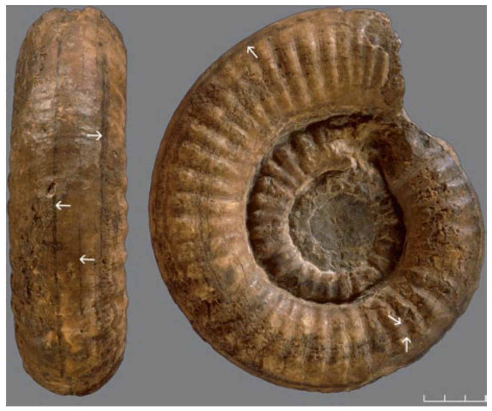
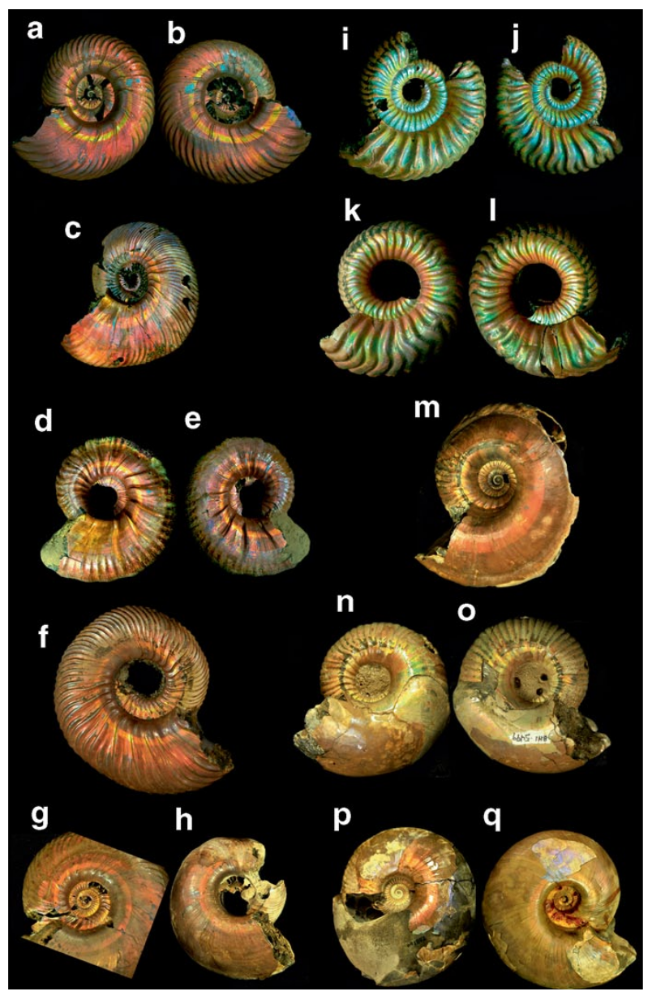

Triassic, Jurassic, Cretaceous
Global distribution (Russia, USA, Madagascar, France, Poland, etc.)
Multiple localities worldwide
A comprehensive review by Mapes & Larson (2015) synthesized all documented instances of preserved coloration in ammonoids known at the time, encompassing more than 50 genera spanning the Triassic, Jurassic, and Cretaceous. Genuine pigmentary patterns — predominantly dark transverse or longitudinal bands contrasting against a pale background — were documented in numerous taxa, with the earliest confirmed records originating from the Lower Triassic of Nevada (USA). A major highlight of the study was the documentation of iridescent longitudinal bands observed in Jurassic specimens from Russia and Poland, as well as Cretaceous specimens from Madagascar, France, and the USA. This optical effect is interpreted as structural coloration produced by the microarchitecture of the shell's outer prismatic layer rather than organic pigmentation. The authors also highlighted the occurrence of pseudocolor patterns, which can falsely mimic in-life coloration due to localized shell thickening, pyritization, or diagenetic mineralization of the internal chambers.
Macroscopic visual examination, high-resolution photography, and acid etching/dissolution.

Reconstruction of Kachpurites fulgens (A) and Garniericeras catenulatum (B) by Andrey Atuchin.
Traces of life coloration (transverse stripes) on Cardioceratidae ammonites from the Upper Cretaceous of the Ryazan and Saratov regions.
Longitudinal color bands (see arrows) on a Xipheroceras sp. specimen from Germany.
Five Late Jurassic ammonoid genera with iridescent longitudinal color bands. Russian (a–o) and Polish (p–q).